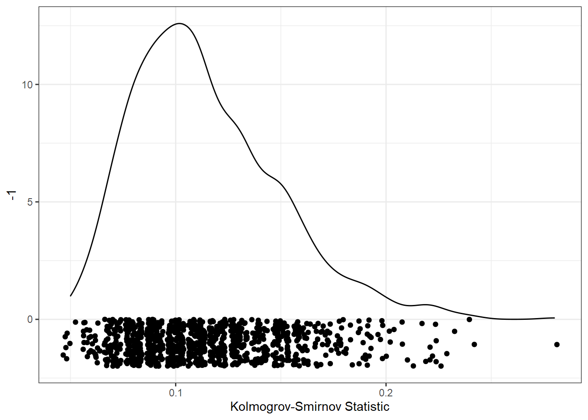

Valószínűségszámítás
Adatkezelés XML-ben
Operációs Rendszerek
Valószínűségszámítás
Ez a kurzus a Valószínűségszámításról szól
Témakörök

- Eseménytér, σ-algebra, relatív gyakoriság, valószínűség.
- Klasszikus Valószínűségi mező. Feltételes valószínűség, események függetlensége.
- Teljes valószínűség tétele, Bayes-tétel.
- Lebesgue-mérték. Mérhetőség
- Valószínűségi változó. Eloszlás. Eloszlás- és sűrűségfüggvény. Radon-Nikodym derivált.
- A Valószínűségi változó numerikus jellemzői. Nevezetes diszkrét eloszlások. Nevezetes folytonos eloszlások.
- Moivre-Laplace tétel.
- Többdimenziós eloszlások. Valószínűségi változók függetlesége, feltételes eloszlások.
- Többdimenziós normális eloszlás. Valószínűségi változók transzformáltjai.
- Konvolúció, műveletek Valószínűségi változókkal. Konvergencia fogalmak.
- Csebisev-típusú egyenlőtlenségek. A nagy számok törvényei.
- Karakterisztikus függvény. Centrális határeloszlás-tételek és alkalmazásai.
- Véletlenszámgenerálás.
- Markov-láncok.
Videós segítség
A tágy honlapja